docker + ros + lidarC16
docker + ros + lidarC1620210623 操作20210622 操作尝试 1：启动 docker container，然后在docker container volume 目录中创建 特定文件，查看 主机同步 volume 目录中是否同时创建 特定文件（是）尝试 2：启动 docker container，然后在挂载的主机 volume 目录中创建 特定文件，查看 container 同步 volume 目录中是否同时创建 特定文件（是），目标文件 test_0622_loc尝试 3：关闭 docker container，然后在挂载的主机 volume 目录中创建 特定文件，查看 container 同步 volume 目录中是否同时创建 特定文件（是），目标文件 test_0622_loc尝试 4：在 双系统中 离线 启动 lslidar_c16尝试 5：双系统中 ros 尝试 rostopic尝试 6：双系统中 docker ros 尝试 rostopic20210621 操作20210618 操作1. 启动 lidar，通过 rviz 查看E-1: ROS “is neither a launch file in package”报错2. docker + ros + rviz + lslidar20210617 操作1. 关于 docker volume 的使用2. docker + ros + gui（没有跑通）1. 安装 xhost1. 当前基本配置1. ros 镜像2. container ID3. lslidar_c16 相关路径4. 问，如何将此container作为一个基线版本？（commit、volume）2. docker volume3. docker file (todo)4. docker network尝试：创建一个绑定特定 IP 的 containerE: Error response from daemon: Pool overlaps with other one on this address space (配置docker IP，网段冲突，解决)APPENDIX I: IMAGE INFOAPPENDIX II: CONTAINER INFO
20210623 操作
目标：双系统中实现 docker rostopic 的 lslidar 数据读取
关联：20210622 操作，docker network
在执行完 docker network 操作之后，当前 docker 与 host 信息
xxxxxxxxxx21REPOSITORY TAG IMAGE ID CREATED SIZE2ros_lslidar_c16 v1.5 78665ceaa89d 15 hours ago 2.24GB
xxxxxxxxxx61CONTAINER ID IMAGE CREATED STATUS NAMES anchor2ad60c6bad011 78665ceaa89d 12 hours ago Up 12 hours lidar_net_test_2 **3691fe6d862d3 78665ceaa89d 13 hours ago Exited (0) 13 hours ago lidar_net_test x41f3d7499d9ef 78665ceaa89d 14 hours ago Exited (0) 14 hours ago nifty_saha *57d8685722712 5205e9ce027e 5 days ago Exited (0) 16 hours ago awesome_noether **67138b0a9f2eb 5205e9ce027e 5 days ago Exited (0) 5 days ago angry_carson **
ImageID 78665ceaa89d 是通过 containerID 7d8685722712 创建而来（see anchor information），containerID ad60c6bad011 是目标版本（包含配置好的 net_work: 192.168.1.9，volume: catkin_ws，ros-kinetic）。
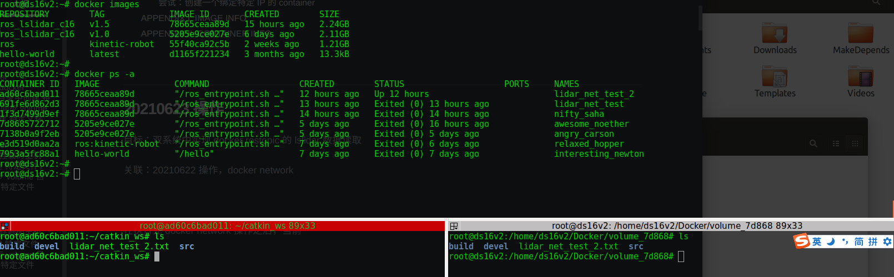
rospack list

ifconfig
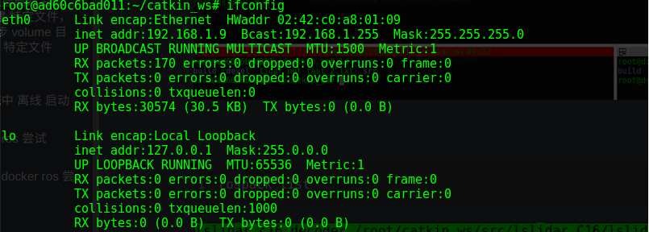
roslaunch lslidar_c16_decoder lslidar_c16.launch --screen
问题：
host 中的 网络配置，br-b11f5b9f5ac0 的地址 192.168.1.1

docker network lslidar_network，

20210622 操作
目标：双系统中实现 docker rostopic 的 lslidar 数据读取
关联：2. docker volume
问题：是否可以不启动 docker 单独操作 docker volume？ docker 中绑定的 volume 与 host 中的 volume 是同步的，即使在不启动 docker 单独操作 host volume，在启动 docker 之后，docker volume 会自动与 host volume 同步。
尝试 1：启动 docker container，然后在docker container volume 目录中创建 特定文件，查看 主机同步 volume 目录中是否同时创建 特定文件（是）
1# 1. 使用镜像创建（docker create）一个 container 然后启动（docker start）这个 container，2# 2. 在这个 container 中创建一个 volume（-v）/root/catkin_ws，并将这个 volume 与主机目录绑定3# /home/ds16v2/Docker/volume_5205e4docker run -i -t -v /home/ds16v2/Docker/volume_5205e:/root/catkin_ws 5205e9ce027e /bin/bash56# 在 container volume /root/catkin_ws 下创建一个目标文件夹 test_0622，可以看见在 主机目录下同时生成了7# 目标文件夹 test_0622

尝试 2：启动 docker container，然后在挂载的主机 volume 目录中创建 特定文件，查看 container 同步 volume 目录中是否同时创建 特定文件（是），目标文件 test_0622_loc

尝试 3：关闭 docker container，然后在挂载的主机 volume 目录中创建 特定文件，查看 container 同步 volume 目录中是否同时创建 特定文件（是），目标文件 test_0622_loc
xxxxxxxxxx71# 在 主机目录下2mkdir test_0622_loc_cOff34# 启动 docker5docker container start 7d8685722712 -i67# 在 container 的 /root/catkin_ws 中可以发现 特定文件夹 test_0622_loc_cOff

但是应该不能在主机下编译 src，因为退出 docker 之后，ros 使用主机的编译环境，而 主机上的 volume 使用的 docker ros 编译环境。

xxxxxxxxxx31# 进入 docker： docker exec -i -t containerID /bin/bash2apt-get update3apt-get install iputils-ping
尝试 4：在 双系统中 离线 启动 lslidar_c16
xxxxxxxxxx51rospack list # 查看 编译的 ros package23roslaunch [package name] <file_name> # 启动 ros 文件45rostopic list # 查看启发布的 topic

可以看见：/lslidar_point_cloud topic 存在（下午可以接线看一下接收到的数据）
xxxxxxxxxx1211root@7d8685722712:~/catkin_ws# roslaunch lslidar_c16_decoder lslidar_c16.launch --screen2... logging to /root/.ros/log/e55cf272-d30b-11eb-a827-0242ac110002/roslaunch-7d8685722712-1549.log3Checking log directory for disk usage. This may take awhile.4Press Ctrl-C to interrupt5Done checking log file disk usage. Usage is <1GB.67started roslaunch server http://7d8685722712:45127/89SUMMARY10========1112PARAMETERS13* /lslidar_c16_decoder_node/angle3_disable_max: 014* /lslidar_c16_decoder_node/angle3_disable_min: 015* /lslidar_c16_decoder_node/angle_disable_max: 016* /lslidar_c16_decoder_node/angle_disable_min: 017* /lslidar_c16_decoder_node/channel_num: 818* /lslidar_c16_decoder_node/frame_id: laser_link19* /lslidar_c16_decoder_node/frequency: 10.020* /lslidar_c16_decoder_node/max_range: 150.021* /lslidar_c16_decoder_node/min_range: 0.1522* /lslidar_c16_decoder_node/point_num: 200023* /lslidar_c16_decoder_node/publish_point_cloud: True24* /lslidar_c16_decoder_node/publish_scan: True25* /lslidar_c16_decoder_node/use_gps_ts: False26* /lslidar_c16_driver_node/add_multicast: False27* /lslidar_c16_driver_node/device_port: 236828* /lslidar_c16_driver_node/group_ip: 224.1.1.229* /lslidar_c16_driver_node/lidar_ip: 192.168.1.20030* /rosdistro: kinetic31* /rosversion: 1.12.173233NODES34/35lslidar_c16_decoder_node (lslidar_c16_decoder/lslidar_c16_decoder_node)36lslidar_c16_driver_node (lslidar_c16_driver/lslidar_c16_driver_node)3738ROS_MASTER_URI=http://localhost:113113940process[lslidar_c16_driver_node-1]: started with pid [1566]41[ INFO] [1624336490.983828978]: namespace is /lslidar_c16_driver_node42[ INFO] [1624336490.990992613]: Opening UDP socket: address 192.168.1.20043[ INFO] [1624336490.991021298]: Opening UDP socket: port 236844[ INFO] [1624336490.991037285]: expected frequency: 833.333 (Hz)45[ INFO] [1624336490.991883920]: Opening UDP socket: port 236846[ INFO] [1624336490.991909172]: Initialised lslidar c16 without error47process[lslidar_c16_decoder_node-2]: started with pid [1567]48[ WARN] [1624336491.527623481]: discard Point cloud angle from 0.00 to 0.0049[ WARN] [1624336491.527676338]: switch angle from 6.28 to 6.28 in left hand rule50[ WARN] [1624336491.533179798]: Using GPS timestamp or not 051[ INFO] [1624336491.533202499]: require to publish scan type message52[ WARN] [1624336492.994084799]: lslidar poll() timeout53[ WARN] [1624336494.996root@7d8685722712:~/catkin_ws# roslaunch lslidar_c16_decoder lslidar_c16.launch --screen54... logging to /root/.ros/log/e55cf272-d30b-11eb-a827-0242ac110002/roslaunch-7d8685722712-1549.log55Checking log directory for disk usage. This may take awhile.56Press Ctrl-C to interrupt57Done checking log file disk usage. Usage is <1GB.5859started roslaunch server http://7d8685722712:45127/6061SUMMARY62========6364PARAMETERS65* /lslidar_c16_decoder_node/angle3_disable_max: 066* /lslidar_c16_decoder_node/angle3_disable_min: 067* /lslidar_c16_decoder_node/angle_disable_max: 068* /lslidar_c16_decoder_node/angle_disable_min: 069* /lslidar_c16_decoder_node/channel_num: 870* /lslidar_c16_decoder_node/frame_id: laser_link71* /lslidar_c16_decoder_node/frequency: 10.072* /lslidar_c16_decoder_node/max_range: 150.073* /lslidar_c16_decoder_node/min_range: 0.1574* /lslidar_c16_decoder_node/point_num: 200075* /lslidar_c16_decoder_node/publish_point_cloud: True76* /lslidar_c16_decoder_node/publish_scan: True77* /lslidar_c16_decoder_node/use_gps_ts: False78* /lslidar_c16_driver_node/add_multicast: False79* /lslidar_c16_driver_node/device_port: 236880* /lslidar_c16_driver_node/group_ip: 224.1.1.281* /lslidar_c16_driver_node/lidar_ip: 192.168.1.20082* /rosdistro: kinetic83* /rosversion: 1.12.178485NODES86/87lslidar_c16_decoder_node (lslidar_c16_decoder/lslidar_c16_decoder_node)88lslidar_c16_driver_node (lslidar_c16_driver/lslidar_c16_driver_node)8990ROS_MASTER_URI=http://localhost:113119192process[lslidar_c16_driver_node-1]: started with pid [1566]93[ INFO] [1624336490.983828978]: namespace is /lslidar_c16_driver_node94[ INFO] [1624336490.990992613]: Opening UDP socket: address 192.168.1.20095[ INFO] [1624336490.991021298]: Opening UDP socket: port 236896[ INFO] [1624336490.991037285]: expected frequency: 833.333 (Hz)97[ INFO] [1624336490.991883920]: Opening UDP socket: port 236898[ INFO] [1624336490.991909172]: Initialised lslidar c16 without error99process[lslidar_c16_decoder_node-2]: started with pid [1567]100[ WARN] [1624336491.527623481]: discard Point cloud angle from 0.00 to 0.00101[ WARN] [1624336491.527676338]: switch angle from 6.28 to 6.28 in left hand rule102[ WARN] [1624336491.533179798]: Using GPS timestamp or not 0103[ INFO] [1624336491.533202499]: require to publish scan type message104[ WARN] [1624336492.994084799]: lslidar poll() timeout105[ WARN] [1624336494.996362076]: lslidar poll() timeout106^C[lslidar_c16_decoder_node-2] killing on exit107[lslidar_c16_driver_node-1] killing on exit108[lslidar_c16_driver_node-1] escalating to SIGTERM109shutting down processing monitor...110... shutting down processing monitor complete111done112root@7d8685722712:~/catkin_ws#113362076]: lslidar poll() timeout114^C[lslidar_c16_decoder_node-2] killing on exit115[lslidar_c16_driver_node-1] killing on exit116[lslidar_c16_driver_node-1] escalating to SIGTERM117shutting down processing monitor...118... shutting down processing monitor complete119done120root@7d8685722712:~/catkin_ws#121
尝试 5：双系统中 ros 尝试 rostopic
roslaunch
xxxxxxxxxx591ds16v2@ds16v2:~/catkin_x/lslidar_ws$ roslaunch lslidar_c16_decoder lslidar_c16.launch --screen23... logging to /home/ds16v2/.ros/log/0d4176f0-d31b-11eb-9da0-8c164547794a/roslaunch-ds16v2-17882.log4Checking log directory for disk usage. This may take awhile.5Press Ctrl-C to interrupt6Done checking log file disk usage. Usage is <1GB.78started roslaunch server http://ds16v2:43547/910SUMMARY11========1213PARAMETERS14* /lslidar_c16_decoder_node/angle3_disable_max: 015* /lslidar_c16_decoder_node/angle3_disable_min: 016* /lslidar_c16_decoder_node/angle_disable_max: 017* /lslidar_c16_decoder_node/angle_disable_min: 018* /lslidar_c16_decoder_node/channel_num: 819* /lslidar_c16_decoder_node/frame_id: laser_link20* /lslidar_c16_decoder_node/frequency: 10.021* /lslidar_c16_decoder_node/max_range: 150.022* /lslidar_c16_decoder_node/min_range: 0.1523* /lslidar_c16_decoder_node/point_num: 200024* /lslidar_c16_decoder_node/publish_point_cloud: True25* /lslidar_c16_decoder_node/publish_scan: True26* /lslidar_c16_decoder_node/use_gps_ts: False27* /lslidar_c16_driver_node/add_multicast: False28* /lslidar_c16_driver_node/device_port: 236829* /lslidar_c16_driver_node/group_ip: 224.1.1.230* /lslidar_c16_driver_node/lidar_ip: 192.168.1.20031* /rosdistro: kinetic32* /rosversion: 1.12.173334NODES35/36lslidar_c16_decoder_node (lslidar_c16_decoder/lslidar_c16_decoder_node)37lslidar_c16_driver_node (lslidar_c16_driver/lslidar_c16_driver_node)3839auto-starting new master40process[master]: started with pid [17901]41ROS_MASTER_URI=http://localhost:113114243setting /run_id to 0d4176f0-d31b-11eb-9da0-8c164547794a44process[rosout-1]: started with pid [17914]45started core service [/rosout]46process[lslidar_c16_driver_node-2]: started with pid [17917]47process[lslidar_c16_decoder_node-3]: started with pid [17923]48[ INFO] [1624339871.337362167]: namespace is /lslidar_c16_driver_node49[ INFO] [1624339871.346384364]: Opening UDP socket: address 192.168.1.20050[ INFO] [1624339871.346416896]: Opening UDP socket: port 236851[ INFO] [1624339871.346439668]: expected frequency: 833.333 (Hz)52[ INFO] [1624339871.347702841]: Opening UDP socket: port 236853[ INFO] [1624339871.347729156]: Initialised lslidar c16 without error54[ WARN] [1624339871.354927748]: discard Point cloud angle from 0.00 to 0.0055[ WARN] [1624339871.354972450]: switch angle from 6.28 to 6.28 in left hand rule56[ WARN] [1624339871.359768136]: Using GPS timestamp or not 057[ INFO] [1624339871.359788375]: require to publish scan type message58[ INFO] [1624339871.608347073]: default channel is 859

rostopic
xxxxxxxxxx141ds16v2@ds16v2:~/catkin_x/lslidar_ws$ rostopic list2/diagnostics3/layer_num4/lslidar_packet5/lslidar_point_cloud6/lslidar_sweep7/rosout8/rosout_agg9/scan10/scan_channel11ds16v2@ds16v2:~/catkin_x/lslidar_ws$121314ds16v2@ds16v2:~/catkin_x/lslidar_ws$ rostopic echo /lslidar_point_cloud

尝试 6：双系统中 docker ros 尝试 rostopic
ping 192.168.1.200
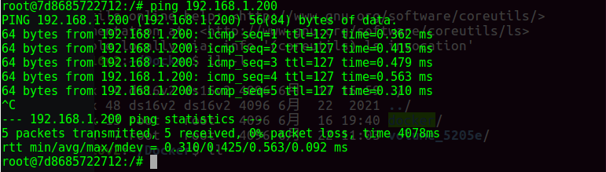
source devel/setup.bash
rospack list

docker 下的 ip
xxxxxxxxxx901root@7d8685722712:/# ifconfig2eth0 Link encap:Ethernet HWaddr 02:42:ac:11:00:023inet addr:172.17.0.2 Bcast:172.17.255.255 Mask:255.255.0.04UP BROADCAST RUNNING MULTICAST MTU:1500 Metric:15RX packets:1727 errors:0 dropped:0 overruns:0 frame:06TX packets:1113 errors:0 dropped:0 overruns:0 carrier:07collisions:0 txqueuelen:08RX bytes:3285243 (3.2 MB) TX bytes:79227 (79.2 KB)910lo Link encap:Local Loopback11inet addr:127.0.0.1 Mask:255.0.0.012UP LOOPBACK RUNNING MTU:65536 Metric:113RX packets:5873 errors:0 dropped:0 overruns:0 frame:014TX packets:5873 errors:0 dropped:0 overruns:0 carrier:015collisions:0 txqueuelen:100016RX bytes:823777 (823.7 KB) TX bytes:823777 (823.7 KB)1718-----------------------------------------------------------------1920root@7d8685722712:/# ifconfig21eth0 Link encap:Ethernet HWaddr 02:42:ac:11:00:0222inet addr:172.17.0.2 Bcast:172.17.255.255 Mask:255.255.0.023UP BROADCAST RUNNING MULTICAST MTU:1500 Metric:124RX packets:1749 errors:0 dropped:0 overruns:0 frame:025TX packets:1122 errors:0 dropped:0 overruns:0 carrier:026collisions:0 txqueuelen:027RX bytes:3287961 (3.2 MB) TX bytes:79997 (79.9 KB)2829lo Link encap:Local Loopback30inet addr:127.0.0.1 Mask:255.0.0.031UP LOOPBACK RUNNING MTU:65536 Metric:132RX packets:5873 errors:0 dropped:0 overruns:0 frame:033TX packets:5873 errors:0 dropped:0 overruns:0 carrier:034collisions:0 txqueuelen:100035RX bytes:823777 (823.7 KB) TX bytes:823777 (823.7 KB)3637root@7d8685722712:/#3839-----------------------------------------------------------------4041root@ds16v2:/home/ds16v2# docker inspect 7d8685722712424344"NetworkSettings": {45"Bridge": "",46"SandboxID": "22e96fc7ce6f0e07484e10071699af1e9bd5f4055cbf0fae6a55df25305a9b7a",47"HairpinMode": false,48"LinkLocalIPv6Address": "",49"LinkLocalIPv6PrefixLen": 0,50"Ports": {},51"SandboxKey": "/var/run/docker/netns/22e96fc7ce6f",52"SecondaryIPAddresses": null,53"SecondaryIPv6Addresses": null,54"EndpointID": "7f18dddeb433b60addabdb4ebf91929139fd83fa19e72b5525368c2c67484992",55"Gateway": "172.17.0.1",56"GlobalIPv6Address": "",57"GlobalIPv6PrefixLen": 0,58"IPAddress": "172.17.0.2",59"IPPrefixLen": 16,60"IPv6Gateway": "",61"MacAddress": "02:42:ac:11:00:02",62"Networks": {63"bridge": {64"IPAMConfig": null,65"Links": null,66"Aliases": null,67"NetworkID": "3dbf42e5454f9f9b65a972b6df16b96e2706cc41cd2131e729ef2683be02f6e8",68"EndpointID": "7f18dddeb433b60addabdb4ebf91929139fd83fa19e72b5525368c2c67484992",69"Gateway": "172.17.0.1",70"IPAddress": "172.17.0.2",71"IPPrefixLen": 16,72"IPv6Gateway": "",73"GlobalIPv6Address": "",74"GlobalIPv6PrefixLen": 0,75"MacAddress": "02:42:ac:11:00:02",76"DriverOpts": null77}78}79}808182-----------------------------------------------------------------838485root@ds16v2:/home/ds16v2# docker network ls86NETWORK ID NAME DRIVER SCOPE873dbf42e5454f bridge bridge local88d0788757c5ac host host local8973f55d19c500 none null local90
20210621 操作
目标：完成 20210618 剩余步骤，在 ros rviz 中显示 lslidar_c16 的点云图。已经可以ping通 192.168.1.200
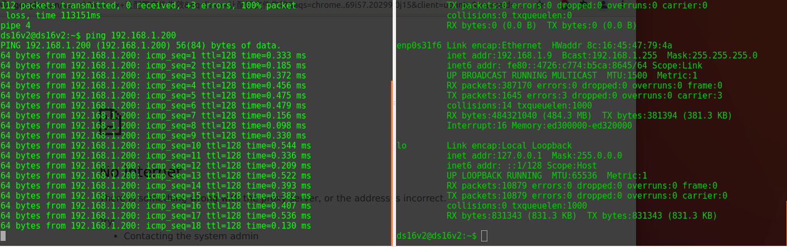


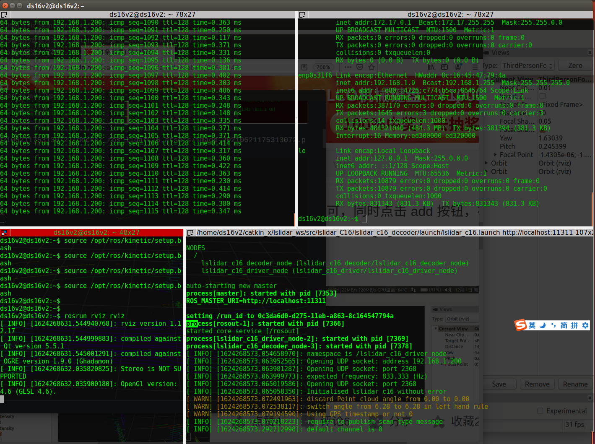


20210618 操作
目标：docker GUI，docker file，lslidar
节点：20210617-2-1
1. 启动 lidar，通过 rviz 查看
E-1: ROS “is neither a launch file in package”报错
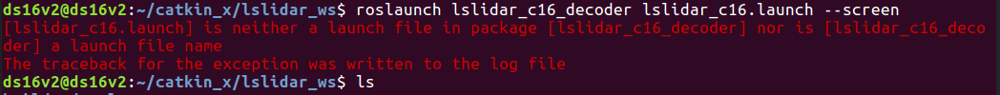
原因： 没有找到 package 配置文件，使用 rospack list, rospack find packageName 查看需要的 package。
2. docker + ros + rviz + lslidar
20210617 操作
1. 关于 docker volume 的使用
总结：

docker 中 创建了 ros_lslidar_c16:v1.0, [5205e9ce027e 2.11GB] 的镜像，这个镜像包含了 ros 环境 + lslidar_c16 的驱动。此镜像作为当前雷达开发的 lower layer，作为只读层。
基于此镜像 创建了一个容器 angry_carson [cID: 7138b0a9f2eb iID: 5205e9ce027e]，作为开发 lslidar_c16 的环境备份，此 container 包含: 1. ros-kinetic 环境，2. lslidar_c16 驱动。
通过使用 docker run，相当于 docker create + docker start：
/home/ds16v2/Docker# docker run -i -t -v /home/ds16v2/Docker/volume_5205e:/root/catkin_ws 5205e9ce027e /bin/bash
使用 5205e9ce027e 镜像创建一个新的 container <cN: awesome_noether, cID: 7d8685722712>，与 container <cN: angry_carson, cID: 7138b0a9f2eb> 平行，但是这个container 用作 lslidar_c16 的主要开发容器。
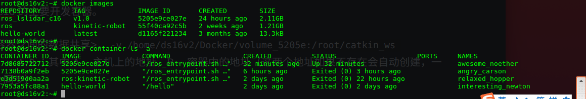
这个容器实现了<主机跟容器之间的数据共享>，-v /home/ds16v2/Docker/volume_5205e:/root/catkin_ws 5205e9ce027e，抽象为 -v A:B；其中 A -- 主机上的地址，B -- 容器中的地址（这两个地址如果不存在会自动创建，一旦容器运行，A与B会完全同步）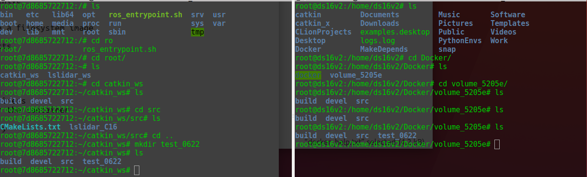


- 修改 typora 图像位置
<img src="xxx.png" alt="image-20210617173432912" style="zoom:80%; float:left;" />
2. docker + ros + gui（没有跑通）
1. 安装 xhost
xxxxxxxxxx141root@7d8685722712:~/catkin_ws# apt install xhost23Reading package lists... Done4Building dependency tree5Reading state information... Done6Package xhost is not available, but is referred to by another package.7This may mean that the package is missing, has been obsoleted, or8is only available from another source9However the following packages replace it:10x11-xserver-utils1112E: Package 'xhost' has no installation candidate1314root@7d8685722712:~/catkin_ws# apt install x11-xserver-utils
xxxxxxxxxx41root@7d8685722712:~/catkin_ws# xhost2xhost: unable to open display ""34root@7d8685722712:~/catkin_ws#
1. 当前基本配置
记录当前的 lslidar_c16 docker + ros 环境下的一些配置信息
在 docker 中，镜像（image）是只读的，容器（container）是可读可写的。
1. ros 镜像
xxxxxxxxxx31image id: 55f40ca92c5b2docker images3docker image ls [-a]
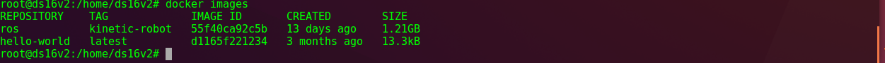
2. container ID
xxxxxxxxxx61container id: e3d519d0aa2a2docker container ls [-a]3---4docker container -h5docker container stop containerID1 [containerID2] ...6docker container rm containerID1 [containerID2] ...
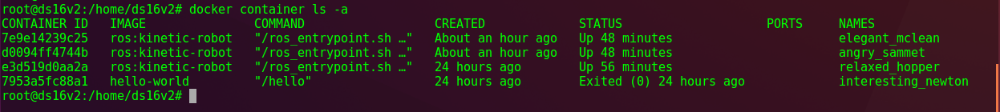
3. lslidar_c16 相关路径
xxxxxxxxxx121docker container ls -a # 查看所有container列表2docker container start containerID # 启动一个已经停止的container，后台3docker container exec -it containerID /bin/bash # 使用交互模式进入一个container4docker container logs -t containerID # 查看container的日志5---6ls7pwd8cd # 进入container的home目录下，就是root9ls # 可以看到lslidar_c16文件夹10---11docker diff relaxed_hopper # 查看当前container与其image的不同12
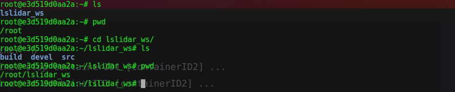
docker container logs -t containerID

docker diff containerName/containerID

4. 问，如何将此container作为一个基线版本？（commit、volume）
- 创建一个新镜像
docker commit
xxxxxxxxxx81docker container ls -a # 查看所有的container2docker commit \ # 从修改的container中创建新image3-a "jacob" \4-m "ros for lslidar_c16" \5e3d519d0aa2a \6ros_lslidar_c16:v1.07docker image ls -a # 查看新创建的image8docker history ros_lslidar_c16:v1.0

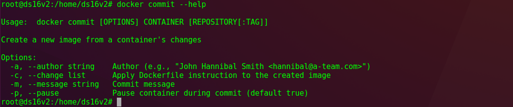

使用
volume(todo)（见下一章）docker 的文件系统
docker 的安装目录是在
/var/lib/dockerxxxxxxxxxx51mkdir ~/Docker # 在主机目录创建docker文件夹2cp -r /var/lib/docker . # root模式下将docker文件拷贝到当前目录3chmod 777 -R docker # 递归修改权限，使当前用户可以访问45docker info # 显示docker系统级的信息
docker 在系统中默认的文件目录位于
/var/lib/docker下，container 文件系统 保存的位置在xxx/docker/overlay2/
2. docker volume
使用命令：
xxxxxxxxxx11docker run -i -t -v /home/ds16v2/Docker/volume_5205e:/root/catkin_ws 5205e9ce027e /bin/bash
-v /home/ds16v2/Docker/volume_5205e:/root/catkin_ws 5205e9ce027e，抽象为 -v A:B；其中 A -- 主机上的地址，B -- 容器中的地址（这两个地址如果不存在会自动创建，一旦容器运行，A与B会完全同步）
3. docker file (todo)
4. docker network
关联：20210622 操作
目的：docker 下设置静态 ip，容器的跨主机访问。
参考：docker 网络配置
确定 container 7d8685722712 的 IP

创建一个 image fa27c853672a 用来实验 docker network


root@ds16v2:~# docker run -it --network host fa27c853672a /bin/bash 在 image fa27c853672a 上创建一个 container 79a02cc7f0fa，这个container 使用 host 的 IP address
xxxxxxxxxx61# 创建一个子网络2root@ds16v2:~# docker network create --driver=bridge --subnet=192.168.1.9/24 net_lslidar_c16345# 从镜像创建并启动一个 container，包含 volume，指定的 IP，bash交互6root@ds16v2:~# docker run -i -t -v /home/ds16v2/Docker/volume_7d868:/root/catkin_ws --network net_lslidar_c16 78665ceaa89d /bin/bash
尝试：创建一个绑定特定 IP 的 container
目的：在 docker 中，创建一个网络，地址 IP：192.168.1.9，之后，创建并启动一个container，需要将此 container 与创建的 网络 IP 绑定；同时，在创建 container 时，需要绑定 volume。给定 image [ros_lslidar_c16；v1.5；78665ceaa89d]
A. 创建自定义网络（设置固定IP）（没有达到要求，docker container IP 与 host IP 相同才行）
xxxxxxxxxx21root@ds16v2:~# docker network create --subnet=192.168.1.0/24 lslidar_net2Error response from daemon: Pool overlaps with other one on this address space

B. 创建 docker 容器（绑定 lslidar_network，绑定 /home/ds16v2/Docker/volume_78665:/root/catkin_ws）
xxxxxxxxxx71root@ds16v2:~# docker run -i -t \2-v /home/ds16v2/Docker/volume_78665:/root/catkin_ws \3--name lidar_net_test_2 \4--net lslidar_network \5--ip 192.168.1.9 \678665ceaa89d \7/bin/bash
ifconfig 查看 刚刚创建的 docker container lidar_net_test_2 的网络配置，IP 更改成功（192.168.1.9）
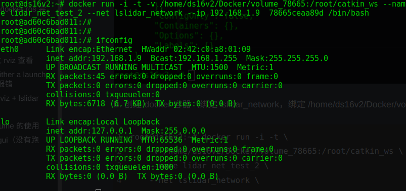
volume 绑定成功
完成，跳转 --> 20210623 操作（错误，ping 192.168.1.200 返回桥接网络 192.168.1.1）
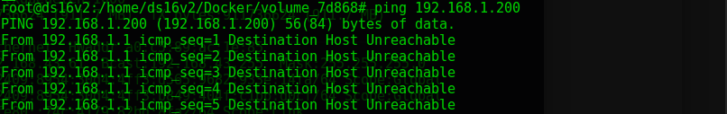
E: Error response from daemon: Pool overlaps with other one on this address space (配置docker IP，网段冲突，解决)
再次创建 docker network（192.168.1.9/24），报错，使用 docker network ls + docker network inspect networkID
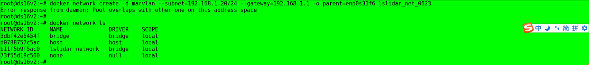
可以看见 lslidar_network 的子网段是 192.168.1.0-24，网段被占用，通过 docker network rm networkID 删除该网段后再次创建网络，可以成功。

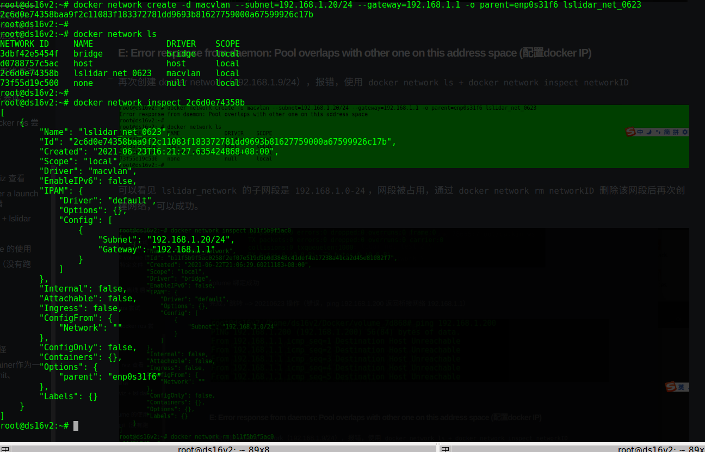
删除冲突的 docker network，解决问题。
raw:
xxxxxxxxxx151root@ds16v2:~# docker images2REPOSITORY TAG IMAGE ID CREATED SIZE3ros_lslidar_c16 v1.0 5205e9ce027e 41 hours ago 2.11GB4ros kinetic-robot 55f40ca92c5b 2 weeks ago 1.21GB5hello-world latest d1165f221234 3 months ago 13.3kB6root@ds16v2:~#78root@ds16v2:~# docker container ls -a9CONTAINER ID IMAGE COMMAND CREATED STATUS PORTS NAMES107d8685722712 5205e9ce027e "/ros_entrypoint.sh …" 17 hours ago Up 17 hours awesome_noether117138b0a9f2eb 5205e9ce027e "/ros_entrypoint.sh …" 23 hours ago Exited (0) 20 hours ago angry_carson12e3d519d0aa2a ros:kinetic-robot "/ros_entrypoint.sh …" 2 days ago Exited (0) 39 hours ago relaxed_hopper137953a5fc88a1 hello-world "/hello" 2 days ago Exited (0) 2 days ago interesting_newton14root@ds16v2:~#15
APPENDIX I: IMAGE INFO
For registed image:
| REPOSITORY | TAG | IMAGE ID | SIZE | INFO |
|---|---|---|---|---|
| ros | kinetic-robot | 55f40ca92c5b | 1.21GB | 原生 ros-kinetic 环境 |
| ros_lslidar_c16 | v1.0 | 5205e9ce027e | 2.11GB | lslidar_c16 driver; ros-kinetic-pcl; |
APPENDIX II: CONTAINER INFO
| CONTAINER ID | IMAGE | NAMES | INFO |
|---|---|---|---|
| 7138b0a9f2eb | 5205e9ce027e | angry_carson | -- |
| 7d8685722712 | 5205e9ce027e | awesome_noether | tree; volume->/root/catkin_ws |